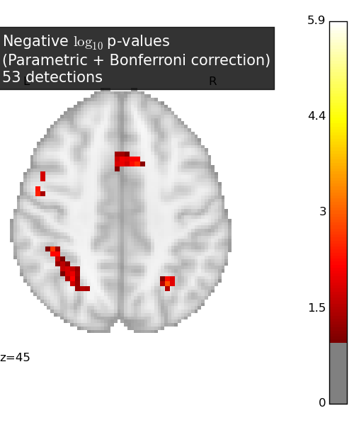

This example shows how to use the Localizer dataset in a basic analysis. A standard Anova is performed (massively univariate F-test) and the resulting Bonferroni-corrected p-values are plotted. We use a calculation task and 20 subjects out of the 94 available.
The Localizer dataset contains many contrasts and subject-related variates. The user can refer to the plot_localizer_mass_univariate_methods.py example to see how to use these.
Script output:
Downloading data from http://brainomics.cea.fr/localizer/brainomics_data_2.zip ...
...done. (25 seconds, 0 min)
Extracting data from /home/varoquau/nilearn_data/brainomics_localizer/9367a9795709415508e772b5dbb3cf66/brainomics_data_2.zip...
...done.
Python source code: plot_localizer_simple_analysis.py
# Author: Virgile Fritsch, <virgile.fritsch@inria.fr>, May. 2014
import numpy as np
from scipy import linalg
import matplotlib.pyplot as plt
from nilearn import datasets
from nilearn.input_data import NiftiMasker
### Load Localizer contrast ###################################################
n_samples = 20
localizer_dataset = datasets.fetch_localizer_calculation_task(
n_subjects=n_samples)
tested_var = np.ones((n_samples, 1))
### Mask data #################################################################
nifti_masker = NiftiMasker(
smoothing_fwhm=5,
memory='nilearn_cache', memory_level=1) # cache options
cmap_filenames = localizer_dataset.cmaps
fmri_masked = nifti_masker.fit_transform(cmap_filenames)
### Anova (parametric F-scores) ###############################################
from nilearn._utils.fixes import f_regression
_, pvals_anova = f_regression(fmri_masked, tested_var,
center=False) # do not remove intercept
pvals_anova *= fmri_masked.shape[1]
pvals_anova[np.isnan(pvals_anova)] = 1
pvals_anova[pvals_anova > 1] = 1
neg_log_pvals_anova = - np.log10(pvals_anova)
neg_log_pvals_anova_unmasked = nifti_masker.inverse_transform(
neg_log_pvals_anova)
### Visualization #############################################################
from nilearn.plotting import plot_stat_map
# Various plotting parameters
z_slice = 45 # plotted slice
from nilearn.image.resampling import coord_transform
affine = neg_log_pvals_anova_unmasked.get_affine()
_, _, k_slice = coord_transform(0, 0, z_slice,
linalg.inv(affine))
k_slice = np.round(k_slice)
threshold = - np.log10(0.1) # 10% corrected
# Plot Anova p-values
fig = plt.figure(figsize=(5, 6), facecolor='w')
display = plot_stat_map(neg_log_pvals_anova_unmasked,
threshold=threshold,
display_mode='z', cut_coords=[z_slice],
figure=fig)
masked_pvals = np.ma.masked_less(neg_log_pvals_anova_unmasked.get_data(), threshold)
title = ('Negative $\log_{10}$ p-values'
'\n(Parametric + Bonferroni correction)'
'\n%d detections' % (~masked_pvals.mask[..., k_slice]).sum())
display.title(title, y=1.1, alpha=0.8)
plt.show()
Total running time of the example: 0.80 seconds ( 0 minutes 0.80 seconds)